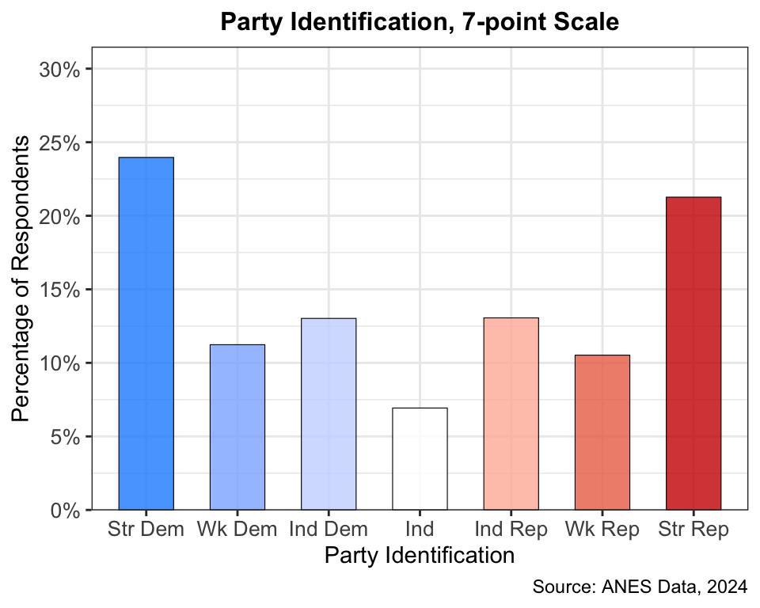
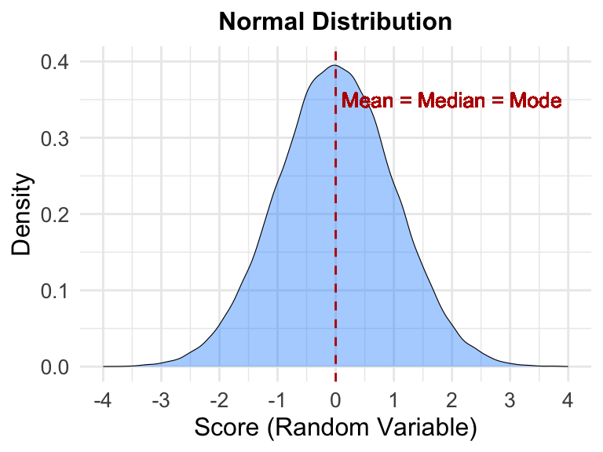
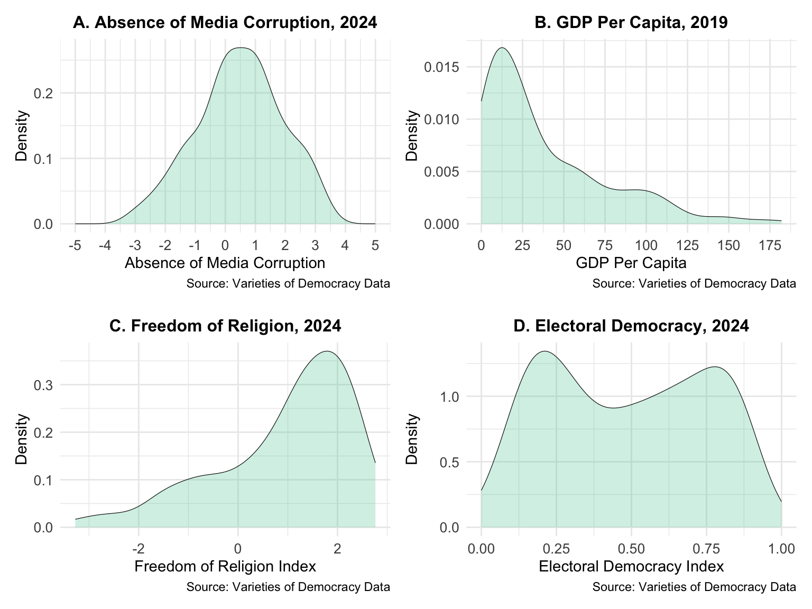
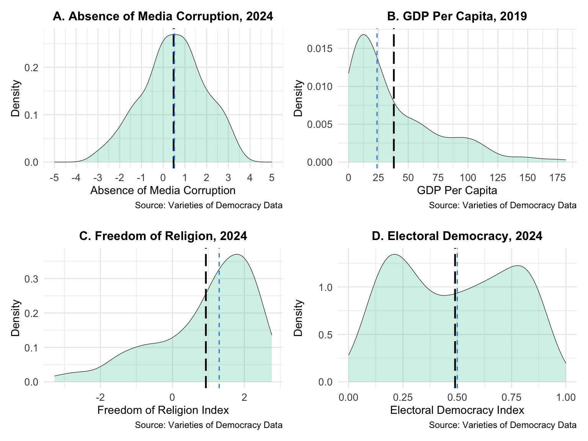
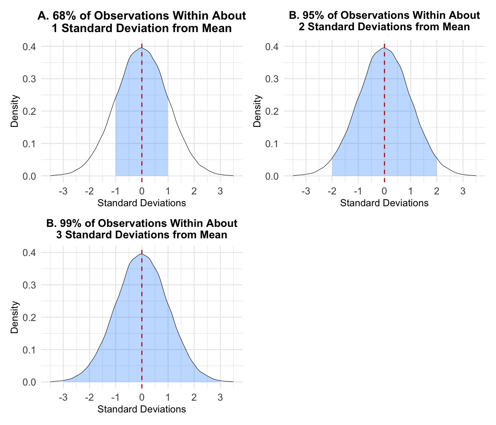
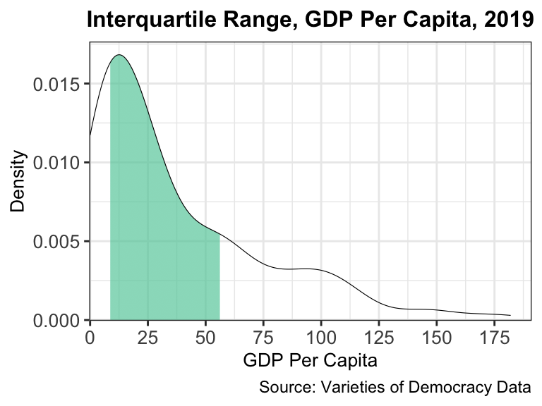
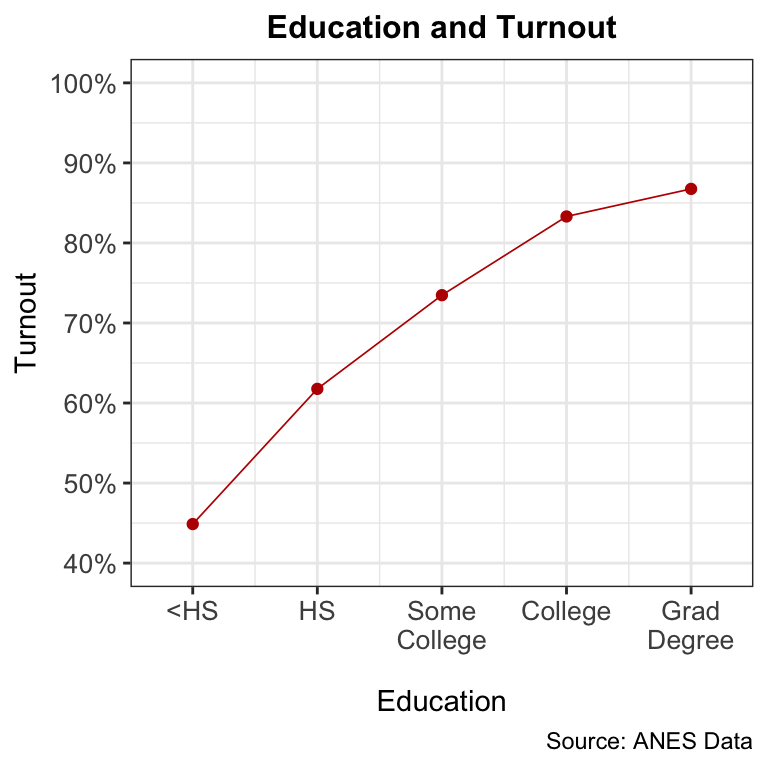
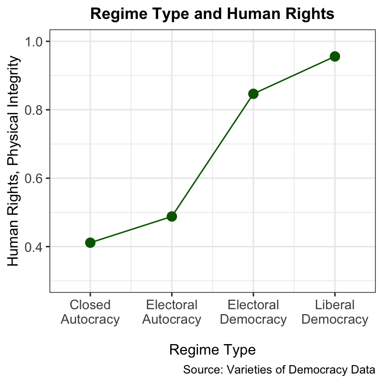

6 Descriptive Statistics
This chapter covers the first branch of statistics: Descriptive statistics, which seeks to formalize many of the core elements covered in Chapter 4. Those elements include:
Univariate descriptive statistics: Describing a variable’s central tendency and dispersion.
Bivariate descriptive statistics: Describing the relationship or association between two variables.
This chapter will formalize many of Chapter 4’s visual intuitions and insights with statistical measures of the aforementioned elements. Importantly, it will also continue to place a heavy emphasis on how the choice of which statistical measures to use is contingent on a variable’s level of measurement. This chapter will also highlight how the choice of certain statistical measures, like central tendency, turn on the nature of the variable’s dispersion (e.g., skewed, bimodal).
6.1 Univariate Descriptive Statistics
The core pieces of univariate descriptive statistics — describing one variable at a time — are measures of central tendency (mean, median, and mode) and measures of dispersion (including standard deviation, range, and interquartile range). One quick point of clarification is in order with my use of “measures” of central tendency and dispersion. Chapter 3 described measuring variables and the properties of measurement — validity and reliability — for evaluating the appropriate means of measuring concepts at the heart of one’s theory and hypothesis.
In this chapter, I will introduce several statistical measures, which use mathematical formulas to summarize key elements of the data writ large. Descriptive statistics seek to achieve the goal of generalization (emphasized in Chapter 2). In “descriptive inference,” researchers want to take large amounts of data and observations and summarize what they observe at a very general level. What are the most representative values in the data? How spread out are the values in general and relative to central tendency? Is the “shape” of the distribution symmetric, skewed, bimodal or something else?
6.1.1 Measures of Central Tendency
The three measures of central tendency are mode, median, and mean. Mode represents the most frequently occurring value of the variable in the data. Users can quickly retrieve the mode of a variable via a bar graph or a frequency distribution. I show the same bar graph of the 7-point party identification variable (from the 2024 ANES) dispalyed in Chapter 4. I also report the frequency distribution below. Note that the percentages in the “%val” column (percentage of value in the absence of missing data) are an exact match with the percentages in the bar graph.
library(tidyverse)
library(labelled)
library(haven)
library(patchwork)
library(scales)
library(ggrepel)
library(questionr)
library(vdemdata)
library(knitr)
library(skimr)
library(gtsummary)
library(corrr)
library(knitr)
anes <- read_dta("https://blbartels.github.io/dataps/anes24.dta") |>
mutate(partyid = if_else(V241227x<0, NA, V241227x),
party3 = case_when(V241221==1 ~ 1,
V241221==2 ~ 3,
V241221==3 ~ 2)) |>
set_value_labels(partyid=c("Str Dem"=1, "Wk Dem"=2, "Ind Dem"=3,
"Ind"=4, "Ind Rep"=5, "Wk Rep"=6,
"Str Rep"=7),
party3=c("Dem."=1, "Ind."=2, "Rep."=3))
freq(anes$partyid, total=TRUE) n % val%
[1] Str Dem 1314 23.8 24.0
[2] Wk Dem 616 11.2 11.2
[3] Ind Dem 714 12.9 13.0
[4] Ind 380 6.9 6.9
[5] Ind Rep 716 13.0 13.1
[6] Wk Rep 577 10.5 10.5
[7] Str Rep 1166 21.1 21.3
NA 38 0.7 NA
Total 5521 100.0 100.0Simply put, the mode is the value of the variable associated with the tallest bar in the bar graph. It is the most frequently occurring value from the frequency distribution. In each, the mode is “strong Democrat.” Recall, however, that since this distribution is bimodal in a sense, we would want to report that the two most frequently occurring values are on the extremes: Strong Democrat and strong Republican.
Median represents the “middle” value in a variable’s distribution. The median falls at the 50th percentile of the variable’s distribution. Percentiles are often used to describe where a test-taker (e.g., for the SAT or LSAT) falls in the distribution of scores. Percentiles are relative measures — where does an individual fall relative to other individuals? The percentile defines the score at which a certain percentage fall either at or below that score. If one scores an 88 (out of 100) on a test, and that score is at the 75th percentile, that means that 75% of the students received a score of 88 or below; 25% of the students received a score greater than 88. If a score of 80 represents the 50th percentile, or median value, that means 50% scored at or below a 80. The median score divides the variable in half, where about half of the students scored below that value and about half scored above it.
To view this logic visually, assume we have another a set of 9 scores from a separate test. In the case where N (sample size) is odd (like in this case, with N=9), like in Table 6.1 below, the data include one middle value that splits the data in half, i.e., half of the observations fall below this value and half fall above it.
| Obs. # | Score, Unsorted | Score, Sorted |
|---|---|---|
| 1 | 84 | 56 |
| 2 | 67 | 67 |
| 3 | 56 | 72 |
| 4 | 95 | 82 |
| 5 | 93 | 84 |
| 6 | 88 | 88 |
| 7 | 82 | 89 |
| 8 | 72 | 93 |
| 9 | 89 | 95 |
To find this value in Table 6.1, we first need to sort the data from the lowest value to the highest value. The second column includes unsorted data, while the third column sorts the data from lowest to highest. To find the median, we simply find the fifth value in the sorted column, which is 84.
What if we have an even number of observations in the data, like in Table 6.2 below where N=10?
| Obs. # | Score, Unsorted | Score, Sorted |
|---|---|---|
| 1 | 84 | 56 |
| 2 | 67 | 67 |
| 3 | 56 | 72 |
| 4 | 95 | 82 |
| 5 | 93 | 84 |
| 6 | 88 | 88 |
| 7 | 82 | 89 |
| 8 | 72 | 93 |
| 9 | 99 | 95 |
| 10 | 89 | 99 |
When N is even, and after we sort the data from lowest to highest, there are actually two middle values: 84 and 88. Four values fall below 84 and four values fall above 88. To find the median in this instance, we take the average, or the midpoint, between these two middle values: \(\frac{84+88}{2}=86\). The median value for this variable is 86; half of the values in the data fall below 86, and half fall above 86.
The mean of a variable represents its average value. While median is the middle value based on percentiles, the mean is the arithmetic middle value. To estimate a mean value, one simply adds up all the values of the variable and divides by N, or the sample size, like in this equation below:
\[ \bar{x} = \frac{x_1+x_2+x_3+x_4+....x_N}{N}\] The more formal equation for a mean is represented by the equation below. Note that where we use the notation \(\bar{x}\) to represent a sample mean of a variable, \(x_i\). The subscript i means the ith person in the data; i is a sequence from 1, 2, 3, 4, …. N.
\[\bar{x} = \frac{\sum\limits_{i=1}^{N}x_i}{N}\] The Greek letter in the equation is Sigma, which represents “summation” in statistics. The notation in the numerator says to add up all of the x values in the data (from 1 to N), and the denominator indicates that we divide that number by N. Table 6.3 illustrates how one estimates a mean for the N=10 example from above.
| Obs. # | Score |
|---|---|
| 1 | 84 |
| 2 | 67 |
| 3 | 56 |
| 4 | 95 |
| 5 | 93 |
| 6 | 88 |
| 7 | 82 |
| 8 | 72 |
| 9 | 99 |
| 10 | 89 |
| Sum | 825 |
| Mean | \(\frac{825}{10} = 82.5\) |
The mean is 82.5, while the median is 86. The mean and median can sometimes be similar and sometimes be very different. This makes sense. The median is not affected by other values (larger or small values) in the data; it is the middle value no matter how extremely large or small the numeric values are. However, the mean, as the “arithmetic center,” is sensitive to the other values of the variable. Indeed, as the equation shows, the mean is a directly a function of those values (the sum of the values in the numerator). This issue actually previews a core topic the chapter will return to below in Section 6.1.3.
6.1.2 Connecting Central Tendency Measures with Levels of Measurement
Table 6.4 below summarizes the types of central tendency measures we should consider contingent on levels of measurement (yet again!). For nominal variables, the one option is mode. It would make no sense to report a median or mean for a nominal variable because it has no ordering (e.g., from low to high). For nominal variables, researchers will often report a frequency table or a bar graph (akin to the bar graph above for party identification).
| Level of Measurement | Options for Measures of Central Tendency |
|---|---|
| Nominal | Mode |
| Ordinal | Mode, Median, or Mean |
| Interval | Median or Mean |
For ordinal variables, researchers can actually use all three measures of central tendency. Some researchers will object to using a mean for an ordinal variable, especially if it has few values. But I will show examples below where reporting all three, and then comparing and contrasting them, can help the researcher understand the variable. Finally, for interval variables, mean and median are most appropriate and most common. It almost never makes sense to report a mode for an interval variable. Some interval variables have a unique value for every single observation, e.g., a percentage like in voter turnout at the state level (from Chapter 4 and Chapter 5). So the mode a tie among every value of the variable. Think back to histograms, though, where the researcher sets a “bin width” for an interval variable. In those situations, a user can get a sense of the mode is in terms of a range of values.
Nominal Variables: Here, I use the example of race from the ANES, which I worked with in Chapter 4. The code below generates a frequency distribution of the race variable, V241501x:
freq(anes$V241501x) n %
[-9] -9. Refused 63 1.1
[-8] -8. Don't know 1 0.0
[-4] -4. Error 3 0.1
[1] 1. White, non-Hispanic 3946 71.5
[2] 2. Black, non-Hispanic 508 9.2
[3] 3. Hispanic 582 10.5
[4] 4. Asian or Native Hawaiian/other Pacific Islander, non-Hispanic 197 3.6
[5] 5. Native American/Alaska Native or other race, non-Hispanic 33 0.6
[6] 6. Multiple races, non-Hispanic 188 3.4
val%
[-9] -9. Refused 1.1
[-8] -8. Don't know 0.0
[-4] -4. Error 0.1
[1] 1. White, non-Hispanic 71.5
[2] 2. Black, non-Hispanic 9.2
[3] 3. Hispanic 10.5
[4] 4. Asian or Native Hawaiian/other Pacific Islander, non-Hispanic 3.6
[5] 5. Native American/Alaska Native or other race, non-Hispanic 0.6
[6] 6. Multiple races, non-Hispanic 3.4ANES uses very long value labels for race, so I generate a new variable below with shorter value labels. Then I generate a frequency distribution for that variable:
anes <- anes |>
mutate(race=if_else(V241501x<0, NA, V241501x)) |>
set_value_labels(race=c("White"=1, "Black"=2, "Hispanic"=3,
"Asian"=4, "Nat. Am."=5, "Multiple"=6))
freq(anes$race, total=TRUE) n % val%
[1] White 3946 71.5 72.4
[2] Black 508 9.2 9.3
[3] Hispanic 582 10.5 10.7
[4] Asian 197 3.6 3.6
[5] Nat. Am. 33 0.6 0.6
[6] Multiple 188 3.4 3.4
NA 67 1.2 NA
Total 5521 100.0 100.0Looking at the last column, the mode is “white” (and the numeric value being 1) at 72.5%. Part of describing a nominal variable is understanding what percentage of the sample each category is. I always recommend running a frequency distribution and/or generating a bar graph to understand these percentages.
Ordinal Variables: The example from Chapter 4 of public approval of the Supreme Court immunity decision (from 2024, ANES data) provides a good example of how we can use all three measures of central tendency for an ordinal variable. The variable is a 6-category approve-disapprove scale:
freq(anes$V241350x) n % val%
[-2] -2. DK/RF in V241348 or V241349 109 2.0 2.0
[-1] -1. Inapplicable 245 4.4 4.4
[1] 1. Approve very strongly 787 14.3 14.3
[2] 2. Approve somewhat strongly 768 13.9 13.9
[3] 3. Approve not strongly 267 4.8 4.8
[4] 4. Disapprove not strongly 214 3.9 3.9
[5] 5. Disapprove somewhat strongly 857 15.5 15.5
[6] 6. Disapprove very strongly 2274 41.2 41.2Like in Chapter 4, I want to “reverse-code” this variable so that higher values reflect greater approval. The default coding has higher values reflecing greater disapproval. The code below performs the reverse coding, relabels the values of the variable, and generates the frequency distribution.
anes <- anes |>
mutate(app_immune=ifelse(V241350x<0, NA, V241350x),
app_immune=7-app_immune) |>
set_value_labels(app_immune=c("Disapp. very str."=1,
"Disapp. somewhat str."=2, "Disapp. not strongly"=3,
"App. not strongly"=4, "App. somewhat"=5,
"App. very Str."=6))
freq(anes$app_immune, total=TRUE, cum=TRUE) n % val% %cum val%cum
[1] Disapp. very str. 2274 41.2 44.0 41.2 44.0
[2] Disapp. somewhat str. 857 15.5 16.6 56.7 60.6
[3] Disapp. not strongly 214 3.9 4.1 60.6 64.7
[4] App. not strongly 267 4.8 5.2 65.4 69.9
[5] App. somewhat 768 13.9 14.9 79.3 84.8
[6] App. very Str. 787 14.3 15.2 93.6 100.0
NA 354 6.4 NA 100.0 NA
Total 5521 100.0 100.0 100.0 100.0Note that I also add cum=TRUE to the freq commnand, which reports “cumulative percentages (for non-missing data). I strongly recommend including this command in frequency distributions. In this instance, we can instantly see from that last column that almost 65% of respondents express some level of disaproval with the Court’s ruling — the Court’s decision was quite unpopular with the public. Moreover, the mode of the variable is the lowest value —”disapprove very strongly.”
Though I will show the median below from the skim output, users can estimate the median directly from a frequency distribution with cumulative percentages. In the last column, as one goes from low to high, the median is the value of the variable associated with the first cumulative percentage that surpasses 50%. That value is “disapprove somewhat strongly,” whose cumulative percentage is 60.6%. For an ordinal variable, many observations will tie for being the “middle value.” We can see in the frequency table that 857 observations are tied for the median value of 2, or “disapprove somewhat strongly.”
The code below reports the mean and median from the skim command.
anes |> skim(app_immune)| Name | anes |
| Number of rows | 5521 |
| Number of columns | 1726 |
| _______________________ | |
| Column type frequency: | |
| numeric | 1 |
| ________________________ | |
| Group variables | None |
Variable type: numeric
| skim_variable | n_missing | complete_rate | mean | sd | p0 | p25 | p50 | p75 | p100 | hist |
|---|---|---|---|---|---|---|---|---|---|---|
| app_immune | 354 | 0.94 | 2.76 | 1.97 | 1 | 1 | 2 | 5 | 6 | ▇▁▁▂▂ |
The output verifies our report of the median (“p50”) of 2. Note also how the skim output reports all five values in a boxplot: minimum, 25th percentile, median, 75th percentile, and maximum. The mean of approval is 2.76. Recall that the variable is coded from 1 to 6, with 1, 2, and 3 the disapproval categories and 4, 5, and 6 the approval categories. The mean is informative here because it reports that the average is on the “disapprove” side of the ledger. That conclusion aligns with our report from the frequency table that about 65% expressed some degree of disapproval with the decision. All central tendency measures reflect a public that generally disapproves of the decision. Each report sheds light on the overall generalization one would want to communicate.
Other ordinal variables, like the 4-category regime type (“v2x_regime”) variable from V-Dem, are not as amenable to “strict” reports of central tendency. Recall that this variable ranges from 0 to 3, but I recode it so that it ranges from 1 to 4 instead. I also add value labels. I report both the frequency distribution and the skim summary.
vdem24 <- vdem |> filter(year==2024) |>
mutate(regime=v2x_regime+1) |>
set_value_labels(regime=c("Closed Autoc."=1, "Elect. Autoc."=2,
"Elect. Democ."=3, "Lib. Democ."=4))
freq(vdem24$regime, total=TRUE, cum=TRUE) n % val% %cum val%cum
[1] Closed Autoc. 35 19.6 19.6 19.6 19.6
[2] Elect. Autoc. 56 31.3 31.3 50.8 50.8
[3] Elect. Democ. 59 33.0 33.0 83.8 83.8
[4] Lib. Democ. 29 16.2 16.2 100.0 100.0
Total 179 100.0 100.0 100.0 100.0vdem24 |> skim(regime)| Name | vdem24 |
| Number of rows | 179 |
| Number of columns | 4608 |
| _______________________ | |
| Column type frequency: | |
| numeric | 1 |
| ________________________ | |
| Group variables | None |
Variable type: numeric
| skim_variable | n_missing | complete_rate | mean | sd | p0 | p25 | p50 | p75 | p100 | hist |
|---|---|---|---|---|---|---|---|---|---|---|
| regime | 0 | 1 | 2.46 | 0.98 | 1 | 2 | 2 | 3 | 4 | ▅▇▁▇▃ |
Critical for describing variable like this is the frequency distribution (and an associated bar graph). Consumers will first and foremost want to know what percentage of countries fall into each category. The frequency distribution provides several pieces of descriptive information. First, from the cumulative frequency, we can see that just over half the countries in the world are some form of autocracy, while slightly less than half are democracies. Technically, the modal category is “electoral democracy,” while the median is technically “electoral autocracy.” However, those reports do not, in a strict sense, give us very much information for making a “descriptive inference” about regimes around the world. What is most interesting is describing the percentages of each category relative to each other. It also striking that liberal democracy is the least frequent regime type in the world.
Interval Variables: For interval variables, we want to be especially attuned to the nature of the dispersion and the “shape” of the distribution, which I will discuss directly below in Section 6.1.3. First, I show a report of one of the V-Dem variables analyzed in Chapter 4, “absence of media corruption” (“v2mecorrpt”).
vdem24 |> skim(v2mecorrpt)| Name | vdem24 |
| Number of rows | 179 |
| Number of columns | 4608 |
| _______________________ | |
| Column type frequency: | |
| numeric | 1 |
| ________________________ | |
| Group variables | None |
Variable type: numeric
| skim_variable | n_missing | complete_rate | mean | sd | p0 | p25 | p50 | p75 | p100 | hist |
|---|---|---|---|---|---|---|---|---|---|---|
| v2mecorrpt | 0 | 1 | 0.48 | 1.43 | -3.05 | -0.41 | 0.52 | 1.4 | 3.31 | ▂▃▇▇▃ |
Recall that this variable ranges from about -3 to 3, and the values of the variable do not have a straightforward meaning (since they come from a more complicated measurement model combining multiple coders’ ratings). However, most valuable from the skim output above is that the mean (0.48) and the median (0.52) are quite similar. Both reports are in the middle of the distribution, which aligns with the data visualization from Section 4.2.3.
Another interval variable from the ANES data is approval of Joe Biden, who was president at the time of the ANES 2024 survey. ANES uses what are known as “thermometer ratings” of candidates and groups. The survey asks respondents rate candidates or groups on a scale ranging from 0 to 100, where 0 is “cold” (very negative evaluation), 50 is “medium” (moderate view, or more neutral), and 100 is “warm” (very positive evaluation). Respondents can give any whole number between 0 and 100. The variable matches our definition of an interval variable in theory: We can communicate exact numeric differences between values of the variable (a person with 75 is “25 degrees warmer” than someone with 50). The output below reports summary statistics for the Biden thermometer rating.
anes <- anes |> mutate(biden=if_else(V241158<0, NA, V241158))
anes |> skim(biden)| Name | anes |
| Number of rows | 5521 |
| Number of columns | 1727 |
| _______________________ | |
| Column type frequency: | |
| numeric | 1 |
| ________________________ | |
| Group variables | None |
Variable type: numeric
| skim_variable | n_missing | complete_rate | mean | sd | p0 | p25 | p50 | p75 | p100 | hist |
|---|---|---|---|---|---|---|---|---|---|---|
| biden | 17 | 1 | 42.57 | 34.48 | 0 | 0 | 40 | 70 | 100 | ▇▂▃▃▅ |
The core reports here tell a story: On average, Biden’s approval via this measure is less than 50 degrees. The mean is 42.57, while the median is 40. In general, the public appeared generally more disapproving than approving of Biden.
6.1.3 Connecting Central Tendency Measures with Dispersion
For interval and also ordinal variables (to a lesser extent), reports of central tendency turn largely on the nature of the variable’s dispersion. Chapter 4 began the section on univariate data visualization by thinking of a normally distributed variable as a baseline for comparison. A large part of data visualization, and also descriptive statistics, is describing the extent to which one’s variable deviates from a symmetric, bell-shaped, single-peaked (unimodal) distribution. This issue becomes particularly relevant in this chapter because in a “perfect” theoretical normal distribution, the three measures of central tendency merge to the same number. I show this insight below using the same simulation reported in Chapter 4.

In theory, the central tendency in a normal distribution is an extremely meaningful signal. In our sample distributions of variables, we will consider only mean and median, since mode will not be relevant for the reasons provided above. This section will emphasize the conditions under which mean and median will be the same, when they will be different, and when one is greater than the other. It is useful to keep this theoretical normal distribution in mind for understanding the condition under which the mean and the median will be exactly the same.
Recall from Chapter 4 that we emphasized two core deviations from the symmetric, normal distribution: Skewness and bimodality. Other deviations exist as well, which we will revisit in this chapter. But first, I will revisit the four V-Dem variables analyzed in Chapter 4 that displayed different types of types of dispersion and distributions.
a <- vdem |>
filter(year==2024) |>
ggplot(aes(x=v2mecorrpt)) +
geom_density(fill="aquamarine3", alpha=.3, linewidth=.2) +
labs(title="A. Absence of Media Corruption, 2024",
x="Absence of Media Corruption", y="Density",
caption="Source: Varieties of Democracy Data\n") +
scale_x_continuous(limits = c(-5, 5), breaks = seq(-5, 5, 1)) +
theme_minimal() +
theme(plot.title = element_text(hjust = 0.5, size=12, face = "bold"),
axis.title = element_text(size=11),
axis.text = element_text(size = 10))
b <- vdem |>
filter(year==2019) |>
ggplot(aes(x=e_gdppc)) +
geom_density(fill="aquamarine3", alpha=.3, linewidth=.2) +
labs(title="B. GDP Per Capita, 2019", x="GDP Per Capita",
y="Density", caption="Source: Varieties of Democracy Data") +
scale_x_continuous(limits = c(0, 182), breaks = seq(0, 180, 25)) +
theme_minimal() +
theme(plot.title = element_text(hjust = 0.5, size=12, face = "bold"),
axis.title = element_text(size=11),
axis.text = element_text(size = 10))
c <- vdem |>
filter(year==2024) |>
ggplot(aes(x=v2clrelig)) +
geom_density(fill="aquamarine3", alpha=.3, linewidth=.2) +
labs(title="C. Freedom of Religion, 2024",
x="Freedom of Religion Index", y="Density",
caption="Source: Varieties of Democracy Data") +
# scale_x_continuous(limits = c(0, 1), breaks = seq(0, 1, .25)) +
theme_minimal() +
theme(plot.title = element_text(hjust = 0.5, size=12, face = "bold"),
axis.title = element_text(size=11),
axis.text = element_text(size = 10))
d <- vdem |>
filter(year==2024) |>
ggplot(aes(x=v2x_polyarchy)) +
geom_density(fill="aquamarine3", alpha=.3, linewidth=.2) +
labs(title="D. Electoral Democracy, 2024",
x="Electoral Democracy Index", y="Density",
caption="Source: Varieties of Democracy Data") +
scale_x_continuous(limits = c(0, 1), breaks = seq(0, 1, .25)) +
theme_minimal() +
theme(plot.title = element_text(hjust = 0.5, size=12, face = "bold"),
axis.title = element_text(size=11),
axis.text = element_text(size = 10))
a + b + c + d + plot_layout(ncol = 2)
Graph A, for absence of media corruption, provided the closest resemblance to a normal distribution, while graphs B and C showed a positive skew and negative skew, respectively. Graph D resembles a bimodal distribution. I already reported the mean and median for the media corruption variable, and recall that the two measures were almost the same. That makes sense knowing that in a perfect normal distribution, the mean and median are the same.
Below, I report descriptive statistics for all four variables but this time using the describe() command from the psych package. This command provides a specific measure of skewness, which comes from a complicated formula that seeks to compare the right and left tails to each other.1
library(psych)
vdem19 <- vdem |> filter(year==2019)
vdem19 |> select(e_gdppc) |> describe() vars n mean sd median trimmed mad min max range skew
e_gdppc 1 174 37.91 37.88 23.83 31.81 26.63 1.74 181.07 179.33 1.38
kurtosis se
e_gdppc 1.42 2.87vdem24 |> select(v2mecorrpt, v2clrelig, v2x_polyarchy) |> describe() vars n mean sd median trimmed mad min max range skew
v2mecorrpt 1 179 0.48 1.43 0.52 0.50 1.32 -3.05 3.31 6.36 -0.18
v2clrelig 2 179 0.93 1.36 1.30 1.09 1.23 -3.28 2.76 6.04 -1.03
v2x_polyarchy 3 179 0.49 0.26 0.50 0.49 0.35 0.01 0.92 0.90 0.02
kurtosis se
v2mecorrpt -0.46 0.11
v2clrelig 0.38 0.10
v2x_polyarchy -1.41 0.02A skewness estimate of “0” represents no skew. Positive values indicate a positive skew, while negative values indicate a negative skew. What values constitute severe skew? Some researchers refer to “Bulmer’s Rule” for guidelines (Bulmer 1979):
- Skewness between -0.5 and 0.5: Mostly symmetric (no serious skew)
- Skewness between 0.5 and 1: Moderately positive skew
- Skewness between -1 and -0.5: Moderately negative skew
- Skewness greater than 1: Strongly positive skew
- Skewness less than -1: Strongly negative skew
Using these guidlines, the statistics support the data visualizations: the gdp per capita and freedom of religion scale have strongly positive and negative skews, respectively. The media variable has an almost nonexistent skew. Note that the democracy variable also shows no skew, meaning it is symmetric. That is technically true, but of course, we know from the data visualization that this variable is bimodal.
Next, I plot vertical lines for the means and medians of each measure in the plots below. The mean is the black, long-dashed line, while the median is the blue, short-dashed line.
aa <- a + geom_vline(xintercept=.48, linetype="longdash", color="black",
linewidth=.8) +
geom_vline(xintercept=.52, linetype="dashed", color="dodgerblue2")
bb <- b + geom_vline(xintercept=37.91, linetype="longdash", color="black",
linewidth=.8) +
geom_vline(xintercept=23.83, linetype="dashed", color="dodgerblue2")
cc <- c + geom_vline(xintercept=0.93, linetype="longdash", color="black",
linewidth=.8) +
geom_vline(xintercept=1.3, linetype="dashed", color="dodgerblue2")
dd <- d + geom_vline(xintercept=0.49, linetype="longdash", color="black",
linewidth=.8) +
geom_vline(xintercept=0.5, linetype="dashed", color="dodgerblue2")
aa + bb + cc + dd + plot_layout(ncol=2)
Graph A again shows the similarity between mean and median. Graph B shows that the mean is greater than the median for this positively skewed GDP varaible. Graph C shows that the mean is less than the median the negatively skewed religion variable. These patters highlight a rule of skewness regarding the mean and median:
- For positively skewed variables (“skewed to the right”), the mean will be greater than the median.
- For negatively skewed variables (“skewed to the left”), the mean will be less than the median.
The graphs allow for a visualization of why this rule holds. Recall previously when I defined mean and median that the median is not sensitive to the variable’s distribution or nature of dispersion. It is the middle value in the distribution regardless of how large or small certain values of the variables are. The mean, on the other hand, is sensitive to the direction of the skew because its value depends on all values of the variable (via the numerator). The mean is “pulled” in the direction of the skew. For graph B (GDP), that direction is to the right, so the mean is pulled in the direction of the outliers on the right tail — those larger more extreme values increase the size of the numerator, thus making the mean larger than the median. The same logic applies to the graph C, for religion. This time, the extreme outliers in the left side of the tail pull the mean in that direction.
I have suggested that the mode technically does not provide a suitable measure of central tendency for interval variables because there will be some variables (with a unique value for each observations, e.g., voter turnout in the states) where the mode will be a tie among all values of the variable (one observation per value). In univariate data visualizations, however, researchers can actually envision the small range within which the mode (or most frequently occurring) lies. The density plot “smooths” the data, so it is giving the generate range of values of the variable where this most frequently occurring result is. The histogram specifies a bin width (measured in the units of measurement the variable takes on). For graphs B and C, one can visualize the “modal range” as the peak of the density plot (about 12.5 for GDP per capita and less than 2 for freedom of religion). This discussion highlights another more specific rule of skewed distributions:
- For positively skewed distributions (graph B): mean > median > mode.
- For negatively skewed distributions (graph C): mean < median < mode.
Once again, most researchers will only speak in terms of mean and median when it comes to interval variables like these. When it comes skewed variables like these, the median is the more appropriate measure of central tendency to report because it is less susceptible to the direction of skewness than the mean. For GDP or income variables, readers may be familiar with reports of “median income” or “median GDP.” Media or researchers report the median as the “average” or central tendency because of the variable’s skewness.
Looking at graph D, which is a bimodal distribution, the mean and median are quite similar, which makes sense since the modes on either end of the distribution essentially balance themselves out. In this case, however, a researcher should definitely report what those two modal values (or modal ranges) are. That is the generalization of interest about the variable.
This issue gets to the last core point I want to make in this section: When it comes to ordinal or interval variables, if dispersion is the central, dominant feature, then describe that variable first and foremost in terms of its dispersion (e.g., skewness or bimodal). Only after that discuss the measure of central tendency. For skewed variables, discuss the direction of the skew, then report the median. For bimodal variables, describe what the two modes are; and those two modes may not be directly tied (which they will not be in most data contexts), but it is worth noting what the ranges of those modes are and what it meaans for the nature of the variable. If a variable is normally distributed, quite symmetric, and single-peaked, one can jump to describing central tendency first and then describing dispersion (see below).
6.1.4 Measuring Dispersion
Once we have described a variable’s central tendency conditional on the nature of its dispersion, we can summarize the degree or magnitude of dispersion itself. We can generate summary measures such as standard deviation, range, and interquartile range that provide with a generalization as to how much “spread” there is in the data. Spread refers to how far apart the observations are from each other or relative to the mean or central tendency. Yet again, the choice of one of these measures turns on the nature and shape of the distribution itself (skewness, bimodality, etc.).
Standard Deviation: Standard deviation can be thought of broadly as the average “miss” or distance a random observation is from the mean of the variable. Recall this graphic from Chapter 4 showing examples of high and low dispersion.

The average distance between a random datapoint and the mean (0 in both graphs) would be much larger in the second graph compared to the first. Thus, the “spread” of the observations is higher in this second graph as well. We would thus expect a larger standard deviation in the second graph relative to the first.
The logic of an average “miss” or distance is captured by the formula for a standard deviation, which I will refer to as “s.d.” Note that some textbooks will refer to standard deviation as simply “s.” The formula is below:
\[s.d. = \sqrt{\frac{\sum\limits_{i=1}^{N}(x_i-\bar{x})^2}{N-1}}\] The numerator says to first calculate the “miss” or “distance from the mean,” i.e., \(x_i-\bar{x}\), for each observation. This quantity is a given observation, \(x_i\), minus the mean of x, \(\bar{x}\). We square that distance because if we added up the unsquared distances, the positive distances would offset the negative distances. Squaring makes all the distances positive. Then we divide this quantity by \(N-1\), where \(N\) is the sample size. Why do we use \(N-1\) instead of \(N\)? This gets to the notion of “degrees of freedom” for finite samples. If we assumed large samples (as N tends toward infinity), we can simply use N. For smaller samples, we use degrees of freedom. The “1” in particular comes from the fact that we are estimating a parameter, i.e., the “sample mean” of x, \(\bar{x}\). So we “penalize” ourselves for this estimation. We will revisit degrees of freedom in Chapter 7 and Chapter 8.2 Finally, we square this whole quantity.
The “unsquared” version of this equation is called the “variance,” or “var”:
\[var = \frac{\sum\limits_{i=1}^{N}(x_i-\bar{x})^2}{N-1}\] Standard deviation is thus the square root of the variance:
\[s.d.=\sqrt{var}\] Properties of the Normal Probability Distribution: Standard deviation as a summary of the “spread” dispersion has an intuitive interpretive appeal because of its connection to the normal distribution — and this time, I mean the actual probability distribution called the “normal distribution,” which I will discuss in greater detail in Chapter 7. The normal distribution possesses well-known properties for the percentage of observations falling with a certain number of standard deviations from the mean. The three plots below illustrate these properties. Each distribution is a “standard normal distribution,” where the units along the x-axis are standard deviations.

In a normal distribution:
- 68% of observations are within about 1 standard deviation (\(mean \pm 1~s.d.\)) from the mean (graph A).
- 95% of observations are within about 2 standard deviations (\(mean \pm 2~s.d.\)) from the mean.
- 99% of observations are within about 3 standard deviations (\(mean \pm 3~s.d.\)) from the mean.
Thus, once we estimate our sample s.d. for a variable, we can draw these types of conclusions to communicate the degree of dispersion and spread. One major cavaet is in order, however: Because these properties comes straight from the normal distribution (unimodal, symmetric, no skew), they will actually only apply to variables that resemble a normal distribution. Herein lies the critical importance of data visualization before computing descriptive statistics like standard deviation (or central tendency measures). One must be careful not to apply these standard deviation rules to variables with severe skews, or more generally, to variables that deviate significantly from a normal looking distribution. For variables whose distributions deviate slightly or moderately from the bell-shaped curve, the rules of standard deviation for the normal should be used more as a rule of thumb than in a strict sense.
So what are ideal ways to summarize dispersion for skewed variables or variables that deviate significantly from a normal, bell-shaped distribution?
Let’s revisit two of the four V-Dem variables. Below, I recap descriptive statistics for these variables.
| Name | select(vdem24, v2mecorrpt… |
| Number of rows | 179 |
| Number of columns | 1 |
| _______________________ | |
| Column type frequency: | |
| numeric | 1 |
| ________________________ | |
| Group variables | None |
Variable type: numeric
| skim_variable | n_missing | complete_rate | mean | sd | p0 | p25 | p50 | p75 | p100 | hist |
|---|---|---|---|---|---|---|---|---|---|---|
| v2mecorrpt | 0 | 1 | 0.48 | 1.43 | -3.05 | -0.41 | 0.52 | 1.4 | 3.31 | ▂▃▇▇▃ |
| Name | select(vdem19, e_gdppc) |
| Number of rows | 179 |
| Number of columns | 1 |
| _______________________ | |
| Column type frequency: | |
| numeric | 1 |
| ________________________ | |
| Group variables | None |
Variable type: numeric
| skim_variable | n_missing | complete_rate | mean | sd | p0 | p25 | p50 | p75 | p100 | hist |
|---|---|---|---|---|---|---|---|---|---|---|
| e_gdppc | 5 | 0.97 | 37.91 | 37.88 | 1.74 | 8.57 | 23.83 | 56.01 | 181.07 | ▇▂▂▁▁ |
Let’s begin with the media corruption variable, which had the least amount of skewness and most closely resembles a normal, bell-shaped distribution. The mean is 0.48 and the s.d. is 1.43. The variable ranges from approximately -3 to 3. That means that about 68% of countries are within about 1.43 (i.e., 1 s.d.) measurement units from the mean (note that the measurement units do not have an intuitive appeal); 95% of countries are within about 2.86 (i.e., 2 s.d.’s) units from the mean. For example, we could calculate the range within which about 68% of observations fall as: \(0.48 \pm 1.43 = [-0.95, 1.91]\). And for 95%: \(0.48 \pm 2 \times 1.43 = [-2.38, 3.34]\). Since we are not dealing with a “perfect normal distribution” (nor would we ever), we should not take these numbers too literally. For example, the high part of the range for 95% actually exceeds the maximum value in the data. However, the estimates give us a sense of the degree of spread or dispersion in the data.
Looking at the positively skewed GDP per capita, the severe skewness renders application of the rules of the normal distribution almost meaningless. We can instantly see that if we applied these rules, the range within which 95% of the values would fall would slip into negative number territory, which is impossible for GDP data, which is strictly positive. The skewed variable example makes it obvious that the rules of the normal distribution simply cannot apply to a skewed distribution.
An alternative measure of the degree of dispersion for skewed variables is the interquartile range (IQR). Since percentiles are not as sensitive to the direction of the skew (akin to our “median over mean” for central tendency in the face of skewness), the IQR is often a better measure of a skewed variable’s spread or dispersion. It gives the researcher the “range” of variation in the variable for the middle 50% of the data, i.e., from the 25th to 75th percentile. From the output above, the IQR for GDP per capita is 56.01 - 8.57 = 47.44, which is a bit over $47,000 per person.
Researchers could also shade in the area of the IQR in the density plot, which I do in the graph below.
vdem19 |>
drop_na(e_gdppc) |>
ggplot(aes(x=e_gdppc)) +
geom_density(aes(fill=after_stat(x >= 8.57 & x <= 56.01),
alpha=after_stat(x >= 8.57 & x <= 56.01)),
linewidth=.2, show.legend = FALSE) +
scale_fill_manual(values=c("transparent", "aquamarine3")) +
scale_alpha_manual(values=c(0, .7)) +
labs(title="Interquartile Range, GDP Per Capita, 2019", x="GDP Per Capita",
y="Density", caption="Source: Varieties of Democracy Data") +
scale_x_continuous(limits = c(0, 182), breaks = seq(0, 180, 25),
expand = expansion(mult = c(0.002, 0.05))) +
scale_y_continuous(expand = expansion(mult = c(0.003, 0.05))) +
theme_bw() +
theme(plot.title = element_text(hjust = 0.5, size=12, face = "bold"),
axis.title = element_text(size = 10),
axis.text = element_text(size = 10)) 
This graph provides a powerful visualization of the dispersion, particularly highlighting the middle 50% of the observations in this skewed variable.
What about bimodal variables, akin to the electoral democracy variable from V-Dem? One strategy is communicate the distance between the two “peaks” in the distribution. Another strategy is to think of the peaks as two separate distributions and then think of communicating the something akin to an IQR around each peak. For any distribution that deviates from a normal, bell-shaped distribution, the key is to rely more on percentiles than the standard deviation.
6.2 Bivariate Descriptive Statistics
Like in the case of univariate descriptive statistics, the discussion of bivariate descriptive statistics follows directly from the visual insights in Chapter 4. The goal of bivariate descripitive statitsics is to detect whether a relationship exists between two variables. In the world of hypothesis testing, bivariate analyses are a first cut at evaluating whether an independent variable has an effect on a dependent variable. Another value of bivariate analyses is that it allows for the detection and evaluation of the size of these effects. I will discuss three common bivariate descriptive techniques that are once again tied to levels of measurement for the independent and dependent variables. Table 6.5 below summarizes these three techniques.
| Bivariate Analysis | Levels of Measurement |
|---|---|
| Cross-tabulations (crosstabs) | Ordinal or nominal independent and dependent variables |
| Mean comparisons | Nominal or ordinal independent variable; interval or ordinal dependent variable |
| Pearson’s correlation | Ordinal or interval independent and dependent variable |
6.2.1 Cross-tabulations (Crosstabs)
Cross-tabulations, or “crosstabs” for short, are a useful tool for detecting a relationship between an independent and dependent variable, each of which are “categorical” in nature — either ordinal or nominal. Crosstabs are sort of like a scatterplot in table form in that one is examining values for one variable contingent on values of another variable. The user “crosses” values of one variable with values of another making a crosstab is sort of two-way frequency distribution. The result is a series of “joint frequencies” — how many observations are there who have a characteristic of variable and a characteristic of the other variable?
I use the voter turnout example from the ANES that I analyzed in Chapter 4 as well. I will first report a crosstab of voter turnout against education. Multiple R package contain commands for reporting crosstabs. Two popular choices are tbl_cross from the gtsummary package and tabyl from the janitor package. I use the former here, which actually generates a nice table layout by default for presentations and papers. Like in Chapter 4, I generate and recode new variables for education and voter turnout. Note the straightforward syntax for tbl-cross: The user sets the row variable and the column variable.
anes <- anes |>
mutate(educ = if_else(V241465x < 0, NA, V241465x),
voted = if_else(V242095x < 0, 0, V242095x)) |>
set_value_labels(educ=c("Less than HS"=1, "HS"=2, "Post-HS, no BA"=3,
"BA"=4, "Graduate degree"=5),
voted=c("Did not vote"=0, "Voted"=1))
anes |>
tbl_cross(
row = voted,
col = educ)
PRE: SUMMARY: Respondent 5 Category level of education
|
Total | ||||||
|---|---|---|---|---|---|---|---|
| 1 | 2 | 3 | 4 | 5 | Unknown | ||
| PRE-POST: SUMMARY: VOTER TURNOUT IN 2024 | |||||||
| 0 | 156 | 372 | 461 | 231 | 144 | 20 | 1,384 |
| 1 | 127 | 601 | 1,277 | 1,153 | 943 | 36 | 4,137 |
| Total | 283 | 973 | 1,738 | 1,384 | 1,087 | 56 | 5,521 |
The results is a series of “joint frequencies.” For example, 156 survey respondents have less than a high school degree and did not vote. The table also reports total percentages. A few housekeeping issues: First, even though I defined value labels for the variables, the output reports numeric values for the education and turnout. tbl_cross does not let us use the as_factor track right within the code; instead, the user has to alter the data and change the variable to a factor. Second, by default, the command includes rows and columns for missing data, which we see for education; for turnout, I coded the missing data as “did not vote” (see Chapter 4). For education, I need to remove missing data in the model command. Third, the variable descriptions that ANES uses by default are very long. I can shorten those descriptions in the dataset with the set_variable_labels command from the labelled package. The code below addresses these issues:
anes <- anes |>
drop_na(educ) |>
mutate(educ=as_factor(educ),
voted=as_factor(voted)) |>
set_variable_labels(
educ = "Education",
voted = "Voter Turnout")
anes |>
tbl_cross(
row = voted,
col = educ)
Education
|
Total | |||||
|---|---|---|---|---|---|---|
| Less than HS | HS | Post-HS, no BA | BA | Graduate degree | ||
| Voter Turnout | ||||||
| Did not vote | 156 | 372 | 461 | 231 | 144 | 1,364 |
| Voted | 127 | 601 | 1,277 | 1,153 | 943 | 4,101 |
| Total | 283 | 973 | 1,738 | 1,384 | 1,087 | 5,465 |
While the table appears more streamlined, we are left with a dilemma: How can we make relative comparisons in voter turnout across education categories? The numbers themselves do not provide an appropriate means of comparing voter turnout among those with differing education levels. We cannot conclude that more people with a Bachelors degree voted than those with a graduate degree since 1,153 > 943. That’s because the column totals are different across education categories: 283 respondents with less than a high school education, 973 with a high school education, etc. We need a mechanism for standardizing such comparisons, which begs a reliance on percentages instead of raw numbers.
At this point, I will review the critical rules for setting up a crosstab for evaluating a relationship between an independent variable and a dependent variable.
- Set the independent variable as the column variable.
- Set the dependent variable as the row variable.
- Report column percentages: The percentage of observations in each of the dependent variable categories conditional on values of the independent variable (i.e., among each value for the independent variable).
- To evaluate whether the independent variable influences the dependent variable (in a bivariate, and “not-necessarily-causal” way), compare column percentages across columns — as you move from left to right.
The code below implements these rules to generate the new crosstab
anes <- anes |>
drop_na(educ) |>
mutate(educ=as_factor(educ),
turnout=as_factor(voted)) |>
set_variable_labels(
educ = "Education",
voted = "Voter Turnout")
anes |>
tbl_cross(row = voted, col = educ, percent = "column")
Education
|
Total | |||||
|---|---|---|---|---|---|---|
| Less than HS | HS | Post-HS, no BA | BA | Graduate degree | ||
| Voter Turnout | ||||||
| Did not vote | 156 (55%) | 372 (38%) | 461 (27%) | 231 (17%) | 144 (13%) | 1,364 (25%) |
| Voted | 127 (45%) | 601 (62%) | 1,277 (73%) | 1,153 (83%) | 943 (87%) | 4,101 (75%) |
| Total | 283 (100%) | 973 (100%) | 1,738 (100%) | 1,384 (100%) | 1,087 (100%) | 5,465 (100%) |
The output now reports column percentages that shed light on the relationship between education and turnout. For those with less than a high school education, 45% voted and 55% did not vote. However, among the highest education category (those with a graduate degree), 87% voted while just 13% did not vote. Following rule 4, as we move across columns, the table shows that as education increases (movements from left to right), the percentage of people who voted increases as well (from 45% to 62% to 73%, etc.). This increase in voter turnout from low to high education is quite large. Importantly, the strength of effect tapers off some once we get to the college degree level (signs of a “diminishing marginal returns effect” from Chapter 4). Finally, the last column shows the “total” column for voter turnout. Across the entire sample, 75% reported having turned out, while 25% reported having not turned out.3
Chapter 4 reported a graph that directly translated this crosstab onto a “mean comparison plot.” Recall that since this a binary variable (coded as 0 or 1), the mean of dependent variable is proportion of 1’s in the data. Below, I display this graph again to show the direct correspondence between this crosstab and that graph — the percentages in the graph . The figure should also serve as a reminder that crosstabs have a data visualization analogue.

The graph shows the direct correspondence between the crosstab and this visual display — the percentages in the graph match the column percentages in the “Voted” row from the crosstab. The figure should also serve as a reminder that crosstabs have a data visualization analogue.
6.2.2 Mean Comparisons
Mean comparisons are analogous to crosstabs in that they “cross” values of the independent and dependent variable. Mean comparisons report the mean of the dependent variable (typically an interval variable but could also be ordinal) for each category of the independent variable. Thus, for the analysis to be manageable, the independent variable should be ordinal or nominal.
Since Chapter 4 covered the basics of mean comparisons for data visualization, I will only briefly cover the calculations here. I will revisit the democracy and human rights protection example (using V-Dem data) from Chapter 4. Here, I want to generate the mean of the dependent variable, human rights protections (“v2x_clphy”), for each category of the independent variable, regime type (“v2x_regime”). The use of group_by combined with summarize makes this task quite simple. The code below first creates a new object, “hrmean,” that says to “group” regime variable by its four values and then calculate the mean of human rights for each of those values. I also attach value labels for easier readbility of the output.
hrmean <- vdem |>
filter(year==2024) |>
group_by(v2x_regime) |> summarize(hr_mean = mean(v2x_clphy)) |>
set_value_labels(v2x_regime=c("Closed Autocracy"=0,
"Electoral Autocracy"=1, "Electoral Democracy"=2,
"Liberal Democracy"=3))
print(hrmean)# A tibble: 4 × 2
v2x_regime hr_mean
<dbl+lbl> <dbl>
1 0 [Closed Autocracy] 0.411
2 1 [Electoral Autocracy] 0.488
3 2 [Electoral Democracy] 0.847
4 3 [Liberal Democracy] 0.956Recall that when used together, group_by and summarize reduce the dataset such that the number of observations equals the number of categories within the group_by variable. In this case, v2x_regime has four categories. The output generates the mean of the dependent variable for each regime type. Below, I again show the graph (from Chapter 4) that directly corresponds to this output:

See Chapter 4 again for the interpretation of this graph.
6.2.3 Correlations
Correlations measure how much two variables “go together.” Recall the visualizations of relationships from Section 4.3, variations in both the steepness of the slopes (for the lines of best fit) and the degree of dispersion of the datapoints around that line. Correlation captures more this latter aspect, particularly how much two variables’ variance moves in the same or different direction. While “variance” captures the magnitude of a variable’s dispersion (how close or far away the data points are from the mean), “covariance” captures how much of two variables’ variance moves together. The equation for covariance between two variables, x and y, is included below:
\[cov(x, y) = \frac{\sum\limits_{i=1}^{N}(x_i-\bar{x})(y_i-\bar{y})}{N-1}\] Notice the similarity to the variance equation. The numerator takes the product of each variable’s deviation from the mean for a given observation and then sums across all observations. The numerator is N-1, like in the variance equation.
The equation for Pearson’s correlation coefficient, r, is below:
\[r = \frac{cov(x, y)}{s.d._xs.d._y}\] The numerator is the covariance between x and y, while the denominator is the product of the two standard deviations. Like standard deviation “standardizes” variance and gives us a meaningful way to interpret dispersion, Pearson’s r sort of standardizes covariance and provides a meaningful way to evaluation the relationship between two variables.
The scale for correlation runs from -1 to 1, with 0 falling in the middle. The scale is divergent in the sense that increasing variation from 0 to 1 represents an increasingly positive relationship between x and y. Increasing variation from 0 to -1 represents an increasingly negative relationship between x and y. Table 6.6 below presents a general framework for evaluating how strong, moderate, or weak a relationship is given an estimated correlation. This reflects generally shared standards across fields.
| Pearson’s Correlation (r) | Interpretation |
|---|---|
| -1 to -0.7 | Strong negative relationship |
| -0.7 to -0.3 | Moderately strong negative relationship |
| -0.3 to -0.1 | Fairly weak negative relationship |
| -0.1 to 0 to 0.1 | Very weak or null relationship |
| 0.1 to 0.3 | Fairly weak positive relationship |
| 0.3 to 0.7 | Moderately strong positive relationship |
| 0.7 to 1 | Strong positive relationship |
I note that one should not take these thresholds too literally; they are guidelines, after all. Moreover, researchers and analysts will find that correlation baselines may differ with different types of datasets (large N versus small N, survey data versus countries data, etc.).
While I will evaluate correlations between an independent variable and dependent variable, researchers will also commonly report correlations among several independent variables — or more generally, among variables generally that are not necessarily assigned independent and dependent variable status. In fact, researchers will often report a “correlation matrix” between multiple variables, like below using the base R cor command:
vdem24 |> select(v2mecorrpt, v2clrelig, v2x_polyarchy) |>
cor() v2mecorrpt v2clrelig v2x_polyarchy
v2mecorrpt 1.0000000 0.6642314 0.8421296
v2clrelig 0.6642314 1.0000000 0.7332323
v2x_polyarchy 0.8421296 0.7332323 1.0000000First, notice that this command reports a 3 x 3 matrix with the variable names running along the rows and columns. That means that it reports a variable’s correlation with itself down the main diagonal. Moreover, the “upper diagonal” (the three correlations in the upper-right portion of the table) is a mirror image of the “lower diagonal.” Thus, out of the 9 correlations reported in the table, only 3 are relevant. Researchers commonly report the lower diagonal only. The R package corrr does exactly that with the correlate command below. The shave option is what trims the the full matrix to a lower diagonal only. fashion specifies the number of decimal points to round to; the default is 2, but I include that to demonstrate how one can change the number of decimals. Finally, kable is from the knitr package and puts the output in a more presentable table. One can use kable for other output a well (e.g., output from the freq() or describe() commands).
vdem24 |> select(v2mecorrpt, v2clrelig, v2x_polyarchy) |>
correlate() |> shave() |> fashion(decimals=2) |> kable()| term | v2mecorrpt | v2clrelig | v2x_polyarchy |
|---|---|---|---|
| v2mecorrpt | |||
| v2clrelig | .66 | ||
| v2x_polyarchy | .84 | .73 |
The table reports very high correlations between each pair of variables. Countries with higher levels of freedom of religion and electoral democracy are associated with low media corruption (recall that for the media corruption variable, higher values reflect lower media corruption). Increasing levels of democracy are also associated with increasing levels of freedom of religion. Notice that I am not being specific about the direction of any of these relationships. That is a major benefit of correlations — it does not require the researcher to specify such a direction. Correlations simply provide one with associations that are agnotic of causal ordering.
So far, I have reported correlations for interval variables. Like for standard deviation, correlations are ideal for interval variables (which elements of the correlation formula imply). However, many researchers will report correlations between ordinal variables as well — or correlations between an ordinal and interval variable. The correlation matrix below shows correlations from the ANES data regarding approval for the Supreme Court’s immunity ruling. Unlike in the last example, I have a hypothesis in mind regarding the effect of party identification on approval of the decision. I expect that Republicans will be more supportive of the decision than Democrats. Recall that party identification ranges from Democrat (low values) to Republican (high values). Thus, expect a positive correlation. I also include education in the matrix below:
anes |> select(app_immune, partyid, educ) |>
correlate() |> shave() |> fashion() |> kable()| term | app_immune | partyid | educ |
|---|---|---|---|
| app_immune | |||
| partyid | .62 | ||
| educ | -.12 | -.15 |
The result supports the effect, and also the previous bivariate mean comparison I reported in this chapter and in Chapter 4. As party identification increases from Democrat to Republican, support for the Supreme Court’s immunity decision increases as well. The correlation is quite strong at 0.62, which suggests a strong relationship. Again, the result supports the graph showing the same strong relationship.
Education has a weak, negative association with support for the immunity ruling. That is, individuals with higher levels of education have lower support for the immunity ruling than those with lower levels of education. However, this correlation is very small — very close to the range of “null effects.” Finally, the association between education and party identification is also negative, showing that increases in education are associated with decreases in Republican identification. However, this correlation is yet again approaching “null association” territory.
6.3 Conclusion
Descriptive statistics are a key tool in a researcher’s toolbox. Before one can conduct more rigorous statistical analyses (the subject of both Chapter 7 and Chapter 8), researchers must describe and understand their variables’ central tendency and dispersion, both visually and with the use of basic descriptive statistics. One must also describe and understand the relationship between variables that are part of a researcher’s hypothesis with the use of bivariate data visualization and bivariate descriptive statistics. The next chapter builds on this chapter by introducing readers to the second branch of statistics: Inferential statistics.
The exact formula is: \[skew = \frac{\sum\limits_{i=1}^{N} (x_i - \bar{x})^3}{N \times s.d.^3}\] Moreover, the
psychpackage uses a version that incorporates “degrees of freedom” (which I will discuss below), which adjusts for small or “finite” samples.↩︎Note that as N gets very large, there is little difference between using N versus N-1 in the denominator.↩︎
Public opinion polls notoriously over-report turnout due to “social desirability bias” among voters who may feel hesitant to report that they did not vote in the election. Based on previously examined state turnout, however, these numbers do not appear to be a drastically inflated number.↩︎